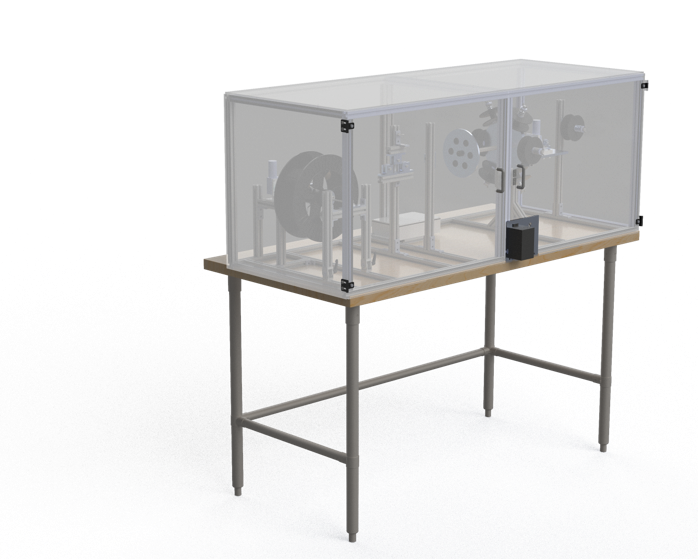
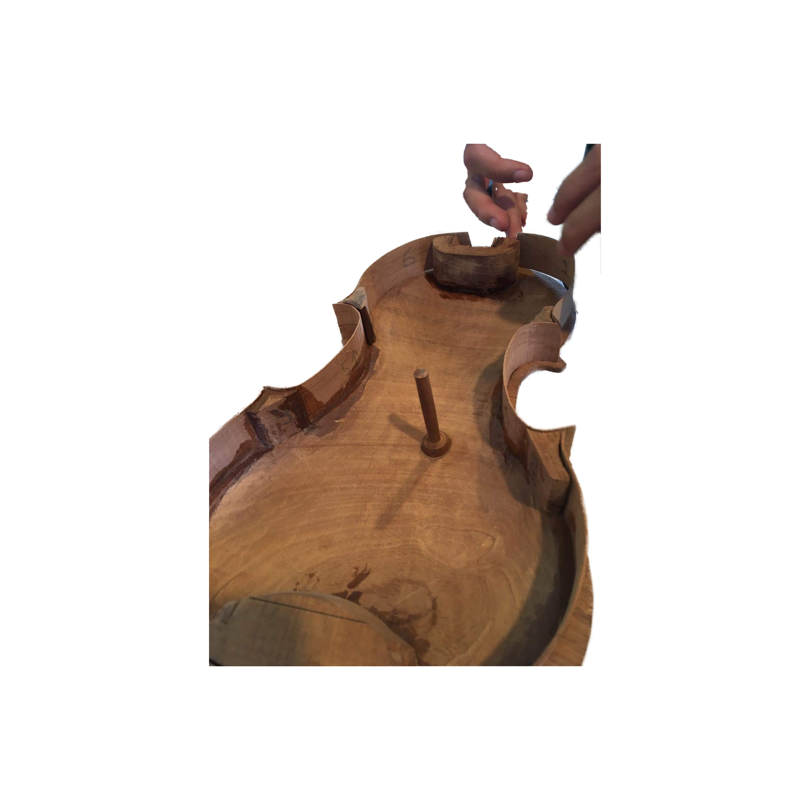
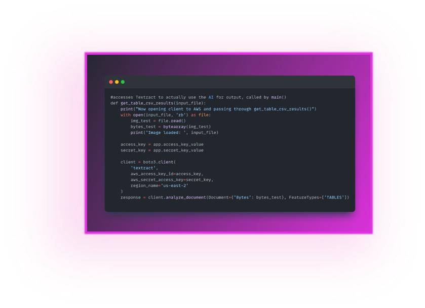

01. | |
|  |
WIRE STRANDERCAPSTONE PROJECT | 6 MONTHSWire Arc Additive Manufacturing (WAAM) is an experimental type of metal 3D printing that can be leveraged in alloy creation, particularly High Entropy Alloys (HEA’s). If feedstock contains multiple metals, they will be can be melted together into custom alloys during deposition. My primary tasks were electrical, power, safety, and UI systems and alloy analysis procedures"A benchtop machine that creates twisted cable feedstock for use with WAAM" |
02. | |
|  |
VIOLINPERSONAL WOODWORKING PROJECT | 5 MONTHSOne time I thought it would be cool to have a violin. Then I saw that violins are expensive. So, I just made one. No template because those are trade secrets, no power tools to make it a challenge."To create a violin with only hand tools" |
03. | |
|  |
POLARISAUTOMATION AT WRIGHT-PIERCE | 4 MONTHSOne of my main tasks while working at Wright-Pierce Environmental Engineering was to assist municipalities in meeting an EPA mandate about locating lead pipes. As an intern, I led the Polaris project that automated data entry and sorting of public records."To automate data entry of handwritten public records" |